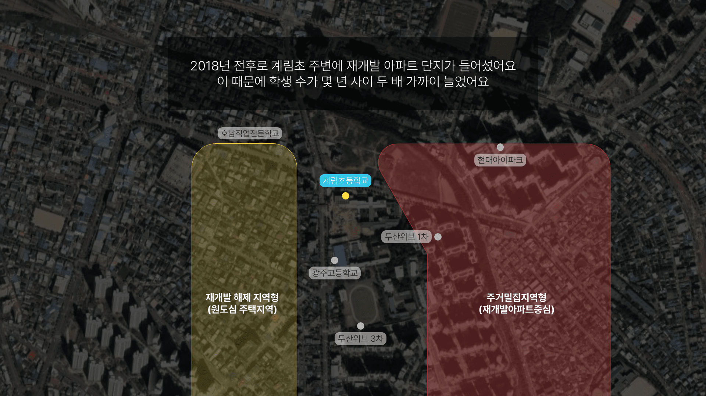
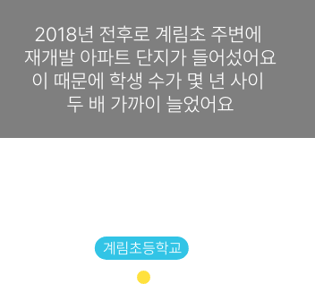

개발되는 옛 도심,
통학로도 새단장
통학로도 새단장
다정한 도시
2
광주광역시 계림도담길
공공디자인으로 행복한 공간 만들기
Scroll Down
Swipe Down
어린이는
성인보다
시야가
좁아요.
어디서
소리가
나는지
금방
알아채지
못하고
한
가지
일에
집중하면
주변
환경엔
둔감해져요
차량
속도를
쉽게
추정하지
못하고
운전자가
자신을
보고
알아서
멈출거라
생각하기도
해요.
교통
약자인
어린이에게
안전한
환경이
요구되는
이유죠
차량
속도를
쉽게
추정하지
못하고
운전자가
자신을
보고
알아서
멈출거라
생각하기도
해요.
교통
약자인
어린이에게
안전한
환경이
요구되는
이유죠
어린이
교통안전은
도시개발과도
관련돼
있습니다.
최근
계획·조성된
도시는
아이들이
다니는
길과
차량이
다니는
길을
분리하죠
하지만
낡은
주택단지를
재개발하는
경우는
어떨까요
광주광역시
계림초등학교
통학로의
이야기를
살펴보면서
함께
생각해
보아요
1965년 계림초 인근
1989년 계림초 인근
계림동은 과거 광주의 중심지였어요. 계림초는 1948년부터 이곳을
지키고 있죠.
하지만 1990년대 도시 외곽이 개발되면서 옛 도심인 계림동은 쇠퇴해갔어요.
계림초에 다니는 학생 수도 줄었어요
하지만 1990년대 도시 외곽이 개발되면서 옛 도심인 계림동은 쇠퇴해갔어요.
계림초에 다니는 학생 수도 줄었어요


학생 수는
늘었지만,
등·하굣길은
옛 도심의
모습처럼
낡아
있었어요.
이곳 학생
10명 중
8명은
걸어서
학교에
오가고
10명 중
7명은
보호자
없이 혼자
등·하교를
해요
자연히
통학로가
더 안전해지길
바라는
목소리가
높아졌죠
학생 수는
늘었지만,
등·하굣길은
옛 도심의
모습처럼
낡아
있었어요.
이곳 학생
10명 중
8명은
걸어서
학교에
오가고
10명 중
7명은
보호자
없이 혼자
등·하교를
해요.
자연히
통학로가
더 안전해지길
바라는
목소리가
높아졌죠
이영희 광주 동구청
계장은 말합니다.
“
구도심에
위치한
계림초는
재개발
사업으로
인해
학생
수와 함께
차량
통행량도
많이
증가했어요.
그래서
안심할
수 있는,
통학로
변화가
필요했습니다
”
후문통학로
계림초등학교
정문통학로
학교
정문으로
가는
통학로는
4차선
간선도로와
석벽
사이에
있어요.
이 통학로에
‘계림도담길’이라는
이름을
지어줬어요.
아이들에게
거대한
이미지로
인식되는
석벽을
친근하게
느낄
수
있도록요
학교
정문으로
가는
통학로는
4차선
간선도로와
석벽
사이에
있어요.
이 통학로에
‘계림도담길’이라는
이름을
지어줬어요.
아이들에게
거대한
이미지로
인식되는
석벽을
친근하게
느낄
수
있도록요
도담은
야무지고
복스럽다는
우리말로,
아이들이
안전하게
자라야
할 길이라는
의미를
담았어요.
계림도담길에
설치한
쉼터는
태양열을
이용해
밤에
빛을
비추고
밖에서도
쉼터 안이
보이도록
만들었죠.
청소년
범죄에
악용되지
않도록요
도담은
야무지고
복스럽다는
우리말로,
아이들이
안전하게
자라야
할 길이라는
의미를
담았어요.
계림도담길에
설치한
쉼터는
태양열을
이용해
밤에
빛을
비추고
밖에서도
쉼터 안이
보이도록
만들었죠.
청소년
범죄에
악용되지
않도록요
아이들이 좋아할만한 캐릭터 조형물도 밤에 빛을 비춥니다
계림도담길이
시작되는
도로에는
차량현재속도
표시장치와
과속방지턱을
새로
설치했어요
계림초 통학로를
디자인한 정성구 총감독은 말해요.
“
구도심이다
보니
통학로와
차도를
완전하게
분리하긴
어려웠어요.
대신 차량
운전자가
‘내가 속도를
줄여야 구역에
진입했구나’
라고 쉽게
인지할 수
있도록
하는 데
초점을
맞췄습니다
”
후문통학로
계림초등학교
정문통학로
학교 후문
주변에
아파트
단지가
들어서면서
정문보다
후문으로
통학하는
학생들이
더 많아졌어요
후문으로
가는
통학로
옆 3차선
도로는
지형이
기울어져
있어
차량이
과속하기
쉬워요.
맞은
편에 또
다른 아파트
단지를
짓고 있어서
공사
차량도
많이
다녀요
후문 옆
차도에
지면에서
10cm가량
높은 고원식
횡단보도를
3개
설치했어요.
기존에
있던
과속방지턱까지
더해
차량이 이
구간에서
속도를
낼 수
없게 한
것이죠
횡단보도와
보행로
주변에는
볼라드와
안전펜스를
설치했어요
인근에서 아이를
키우는 한선영씨는 말합니다.
“
후문
통학로
옆 도로는
내리막길인데다,
후문 맞은
편에 있는
공사장을
오가는
대형
차량들이
많아 걱정이
많이 됐었죠.
하지만
예전보다
확실히
차량
속도가
줄어든
것 같아요
”
통학로
옆 낡은
건물
벽면을
꾸며 밝은
분위기를
내게 했고,
아이들을
기다리는
부모들이
쉴 수
있는 벤치도
마련했어요
횡단보도에
설치한
‘바닥형 LED
점멸신호등’이
아이들의
눈길을
사로 잡아요.
등하교 시간에
후문 통학로
옆 차도는
꽉 막히는데,
아이들은
꼬리를
물고 서 있는
차량에
시야가
막혀 이따금씩
신호등을
잘 보지
못해요.
바닥 LED
점멸 신호등은
이런
아이들에게
도움을 주죠
횡단보도에
설치한
‘바닥형 LED
점멸신호등’이
아이들의
눈길을
사로 잡아요.
등하교 시간에
후문 통학로
옆 차도는
꽉 막히는데,
아이들은
꼬리를
물고 서 있는
차량에
시야가
막혀 이따금씩
신호등을
잘 보지
못해요.
바닥 LED
점멸 신호등은
이런
아이들에게
도움을 주죠
어머니와 함께 등교한
계림초 2학년 김주아양은 말해요.
“
아래에서
불이
들어오니까
신호등이
초록색인지
빨간색인지
알 수 있을
것 같아요.
신기하기도
하고,
학교가는
길이 더
재미있을
거 같아요
”
횡단보도
앞 옐로우
존과 공룡
모양의
노랑발자국도
운전자들이
아이들을
쉽게 인지하는
데 도움을
줍니다
앞으로
해야 할
일이 더
있어요.
아이들을
차로 태우고
내릴
구역을
도로에
만들면
교통혼잡이
심해진다는
우려가
있었어요.
대신,
학교 내부
등 차량이
다니지
않는 공간에
승하차
구역을
만드는
대안을
모색하고
있어요
앞으로
해야 할
일이 더
있어요.
아이들을
차로 태우고
내릴
구역을
도로에
만들면
교통혼잡이
심해진다는
우려가
있었어요.
대신,
학교 내부
등 차량이
다니지
않는 공간에
승하차
구역을
만드는
대안을
모색하고
있어요
아이들
눈높이에
맞는
바닥 LED
점멸신호등을
추가로
설치하면,
아이들이
보다
안전해지겠죠
낡은 도시가
새로운
모습으로
단장할 때,
광주
계림도담길처럼
통학로
안전을
챙기는
모습이
전국 곳곳에
늘어나기를
희망해요
공공디자인으로 행복한 공간 만들기
프로젝트 광주광역시 계림도담길편
취재·제작 경향신문 곽희양기자·최유진PD·백준서PD
사업주관 한국공예·디자인문화진흥원
협력 광주광역시
프로젝트 광주광역시 계림도담길편
취재·제작 경향신문 곽희양기자·최유진PD·백준서PD
사업주관 한국공예·디자인문화진흥원
협력 광주광역시
CopyrightⓒThe Kyunghyang Shinmun, All rights reserved
계림초의
과거 모습
과거 모습
안전한
등하교길
등하교길
계림초등학교의
등하교길
등하교길
정문
통학로
통학로
후문
통학로
통학로
앞으로
해야 할 일
해야 할 일